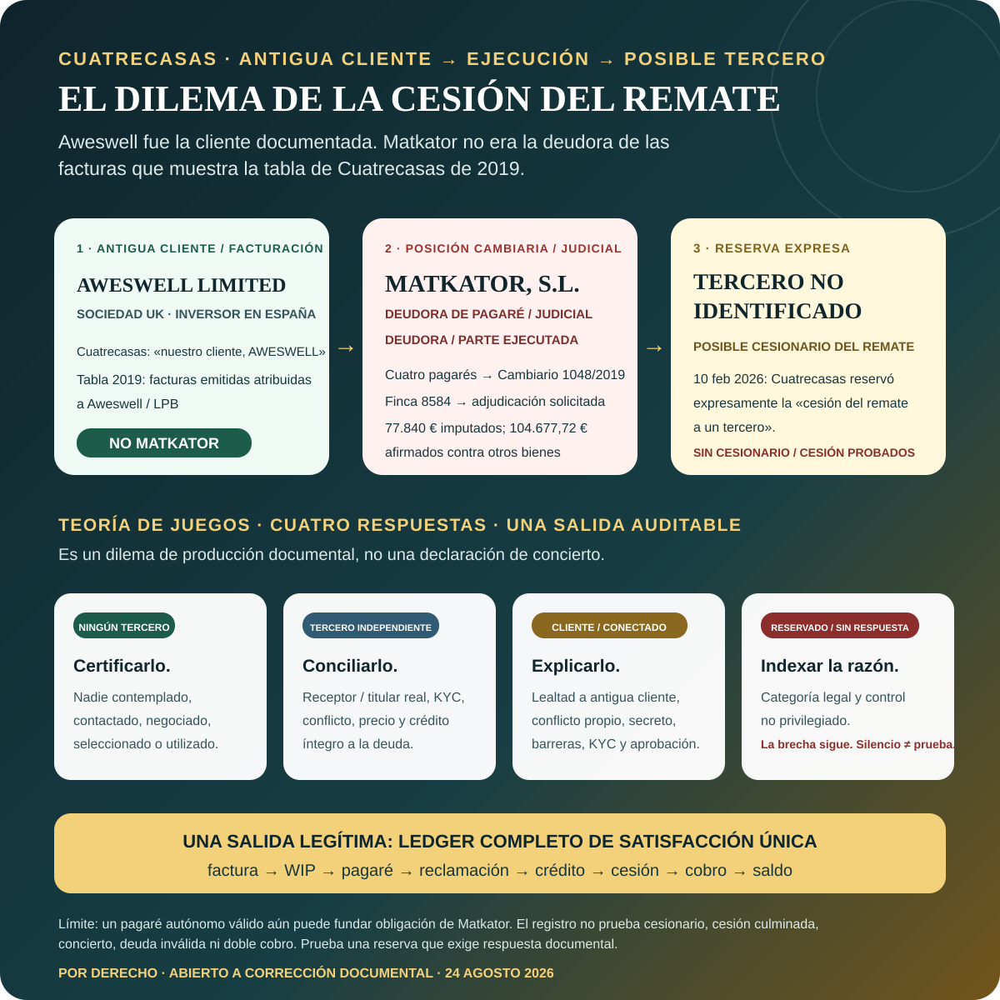

RECONSTRUCCIÓN UNITARIA → RIESGO PRECURSOR → PROTECCIÓN → IMPLEMENTACIÓN → EJECUCIÓN
Cuatrecasas y Sun Park: posición tras la revisión unitaria de ingeniería inversa.
El asunto se ha reconstruido desde el resultado actual MYND/HNT hacia atrás y desde la estructura anterior de propiedad, Comunidad, acreedor y concurso hacia delante. El resultado confirma el mandato integrado y la inversión posterior en la ejecución, amplía el análisis protector a enero de 2018, refuerza el problema de implementación y handover de octubre de 2019 y estrecha una alegación anterior: Cuatrecasas sí dio asesoramiento económico razonado en la fase inicial de la salida concursal.
Límite de control: el perímetro conectado con Acosta Matos / CAM / HNT / MYND —incluidos sus presuntos predecesores, los disidentes Monte Lanza/Molina y sus representantes— sigue siendo el presunto actor privado y beneficiario principal de la cadena subyacente. Este análisis no absuelve ni desplaza a ese perímetro, a la Administración Concursal o a las actuaciones judiciales controvertidas. No se ha probado que Cuatrecasas se integrara en él ni que existiera un plan común. La posición de la parte cliente es que los actos, omisiones, silencios e inacciones del despacho pudieron facilitar o agravar resultados perseguidos o aprovechados por los actores principales; su posible responsabilidad sería separada y acumulativa, y sus actos posteriores en La Laguna requieren análisis directo propio. No se afirma una declaración penal, civil o deontológica firme.
Posición unitaria actualizada el 24 de agosto de 2026
Posición unitaria actualizada el 24 de agosto de 2026
Contexto transfronterizo de antiguo cliente y persona informante. Aweswell Limited es la sociedad holding constituida en el Reino Unido y el inversor extranjero situado al frente del perímetro de inversión español relevante. El registro localizado de Cuatrecasas identifica a Aweswell como cliente y conecta instrucciones, financiación y trabajo con inversores desde el Reino Unido con servicios concursales, financieros, de garantías, inmobiliarios y de ejecución en España. Gil Marer declara que desde 2020–2021 actúa como persona informante / alertador y como parte directa e indirectamente afectada. Una comunicación de marzo de 2021 a Cuatrecasas utilizó expresamente “injured affected party” y describió comunicaciones regulatorias relativas a Sun Park. Esto registra las capacidades invocadas; no acredita por sí solo estatuto protegido, daño judicialmente declarado ni una acción judicial vigente en el Reino Unido.
VÍA ABIERTA DE RESOLUCIÓN · 24 AGOSTO 2026
Aweswell ha invitado a Cuatrecasas a conciliar la cuenta completa y dialogar.
La propuesta es práctica y documental. Aweswell Limited—la sociedad británica, inversor extranjero y antigua cliente documentada—ha abierto un canal directo para una conversación estructurada de solución. No se pide a ninguna parte que finja que no existen procedimientos ni posibles actuaciones futuras. Se propone sustituir posiciones fragmentadas por un registro único y contestable y comprobar si es posible una solución responsable.
Mapa de cliente, deudor y entidades
Facturas, WIP, pagarés y recuperaciones
Remate, cesión y contabilidad de satisfacción única
Respuestas no privilegiadas sobre conflicto, KYC y controles
El diálogo está abierto; los derechos y vías de rendición de cuentas quedan preservados. La invitación no constituye reconocimiento de deuda o responsabilidad, oferta transaccional vinculante, elección de ley o jurisdicción, inicio de un MASC español, espera, suspensión de procedimiento alguno ni renuncia a acción, remedio, posición de prescripción o comunicación protegida. Las vías civiles, ejecutivas, de investigación penal, profesionales, regulatorias y transfronterizas existentes y contempladas permanecen autónomas y sujetas a sus propios plazos.
Límite de estado público: esta página registra únicamente la existencia, fecha, objeto y proceso propuesto de la invitación. No reproduce la comunicación privada ni los datos de entrega, no revela asesoramiento de los abogados actuales ni actuaciones previstas, y no habla en nombre de abogado alguno. No se afirma aceptación, espera ni resolución por parte de Cuatrecasas.
Nuestra posición actual
1. Responsabilidad subyacente principal
El perímetro privado conectado con Acosta Matos sigue siendo el centro de la presunta cadena de toma de control, transformación del hotel, financiación, explotación y beneficio económico. El análisis de Cuatrecasas no sustituye ni reduce ese caso.
2. Mandato práctico integrado
La propuesta formal de entrada era más estrecha y orientada al financiador. El trabajo aceptado, realizado y facturado a Aweswell unió due diligence, salida concursal, documentos ONA, financiación, garantías, titularidad mixta, acceso de inversores e implementación del rescate.
3. Riesgo conocido antes de junio
En enero y febrero de 2018 el despacho conocía riesgos de posesión material, llaves, códigos de acceso, seguridad privada, acceso de inversores y titularidad mixta. Junio no fue el primer aviso de esa categoría de peligro.
4. Alegación protectora más sólida
La alegación sostenible no es inacción absoluta. Es la posible falta de convertir los riesgos precursores conocidos en un programa único, correcto por entidad, consciente de la operación y preservador de prueba cuando se materializó el hecho de junio.
5. Ventana de implementación de octubre
Después de los resultados favorables de octubre de 2019, la cliente entregó un programa detallado de once bloques de protección e implementación. Cuatrecasas no quiso valorar los siguientes pasos hasta regularizar honorarios. La asignación de urgencias y el handover siguen abiertos.
6. Inversión posterior en la ejecución
Las posiciones de 2024–2026 sobre adjudicación, reserva de cesión y oposición a suspensión o nueva pericial fueron elecciones afirmativas posteriores. Su legalidad, base deudora, presentación del activo, valoración y compatibilidad con deberes frente a antiguos clientes exigen análisis separado.
Tesis de control revisada: Cuatrecasas actuó para Aweswell en una alternativa lícita e integrada frente a la ruta de control y consolidación atribuida a Acosta Matos. Antes de junio de 2018 sabía que posesión, accesos, seguridad, titularidad mixta y capacidad de entrega a inversor u operador eran riesgos vivos. La posición de la parte cliente es que posibles fallos de protección, actualización, implementación y handover —y actos, omisiones, silencios o inacciones asociados— pudieron privarla de una oportunidad real y sustancial de impedir o contener materialmente partes identificables del resultado que desde entonces se intenta revertir. Después, la propia ejecución contra Matkator plantea una inversión directa del propósito protector original que exige examen separado. Esto no prueba concierto, intención criminal ni prevención cierta de todos los hechos posteriores.
CAMBIO DE ENTIDAD · RESERVA EXPRESA · CONTROL DEL TERCERO
Aweswell era la cliente documentada. Matkator se convirtió después en deudora ejecutada. Cuatrecasas reservó expresamente la cesión del remate a un tercero no identificado.
No se deben confundir los papeles. La correspondencia contemporánea llamó a Aweswell Limited «nuestro cliente, AWESWELL» y la tabla de Cuatrecasas de julio de 2019 atribuyó las facturas emitidas a Aweswell y Luchy Playa Blanca, no a Matkator. Matkator apareció después como deudora cambiaria, deudora judicial y parte ejecutada por cuatro pagarés. En su escrito de 10 de febrero de 2026, Cuatrecasas reservó expresamente la posibilidad de ceder el remate a un tercero. El expediente actual prueba la reserva, no la identidad del destinatario ni una cesión consumada.

Dilema de transparencia: si no hubo tercero, certifíquese; si era independiente, identifíquese y concíliese; si se contempló un cliente o persona conectada, explíquense los controles reforzados de lealtad, conflicto, secreto, KYC y aprobación; si la información se retiene lícitamente, identifíquese la categoría y entréguese un índice no privilegiado. El silencio no es prueba, pero deja una brecha documental verificable.
{kind=link}
Cambio de posición tras el escaneo unitario
La posesión, llaves, códigos, seguridad privada, acceso de inversores y propiedad ajena a LPB ya formaban parte del expediente.
La correspondencia contemporánea se refiere expresamente a «nuestro cliente, AWESWELL»; el trabajo y facturación posteriores confirman un papel práctico de rescate más amplio.
La cuestión central es si el conocimiento temprano se convirtió en un plan completo de protección y prueba antes y durante la crisis.
El asesoramiento inicial abordó la satisfacción total de pasivos y los riesgos de pagar una deuda controvertida. La cuestión posterior es actualización, conciliación, implementación y handover.
Tras las decisiones favorables, la cliente propuso un programa de once bloques que permite auditar cada actuación urgente.
La convergencia del activo, la operación y el beneficio hace concreta la hipótesis Acosta Matos; no existe prueba actual del cesionario real, de un acuerdo con Cuatrecasas o de estafa procesal consumada.
EL PAQUETE LLEVADO AL JUZGADO · 8–13 JUNIO 2018
Stoneweg llamó «Oferta Vinculante» al adjunto de 12 de junio; al día siguiente Irigoyen utilizó el paquete ante el juez.
«Después de lo acordado en nuestra call de hoy, adjunto envío Oferta Vinculante con los condicionantes comentados.» — Stoneweg, 12 junio 2018
1 · Base operativaPaquete ONA / Clubotel firmado
El arrendamiento de industria hotelera y su anexo suspensivo se firmaron el 6 de junio y vincularon la explotación a financiación suficiente del concurso.
2 · Un solo paquete recíproco de salidaLagune / Elaia · 26 M EUR
La oferta con fondos propios firmada por Lagune y el derecho firmado por Aweswell a favor de Elaia eran componentes conectados de un único paquete de adquisición de respaldo. La cláusula original activa expresamente el derecho preferente si se recibe financiación puente.
3 · Remisión de oferta vinculanteStoneweg → Varia / Aweswell
El instrumento adjunto nombra a Varia Structured Opportunities S.A., ofrecía hasta 15,5 M EUR, asignaba unos 13,84 M EUR a deuda concursal y definía la mecánica de pago/garantía.
4 · Presentación judicialIrigoyen · 13 junio
El relato contemporáneo dice que el term sheet dio a Irigoyen más argumentos; el juez fue descrito como dispuesto a resolver el concurso mediante cancelación de deudas y levantarlo antes del verano.
Posición causal del reclamante. Gil Marer califica el hecho de 7 de junio como una toma de control por fuerza e ilícita y sostiene que fue la ruptura operativa que impidió convertir este paquete integrado. La auditoría debe contrastarlo con condición, responsable, fecha, prueba de impedimento y siguiente acto exactos; no reactivar la objeción circular «sin garantía no hay fondos» que la propia mecánica transaccional resolvía.
Límite documental: el PDF Varia localizado tiene en blanco los bloques de conformidad y se sigue pidiendo comité/facility/desembolso final. Es una brecha de conversión, no una razón para degradar el paquete firmado y transmitido a esperanza abstracta.
CONTROL CONTRAFACTUAL · NO SOLO RETROSPECTIVA
Qué puede significar responsablemente «una actuación correcta pudo evitarlo».
El expediente permite examinar prevención y contención en cinco puertas distintas. La pretensión no necesita afirmar que una sola medida garantizaba todo el rescate; debe identificar la protección probablemente perdida en cada puerta y el daño incremental posterior.
| Puerta de decisión | Actuación competente a comprobar | Protección que pudo conservarse | Prueba pendiente |
|---|---|---|---|
| Denominador 2017 | Establecer si existió encargo, instrucción, trabajo o facturación anterior a enero de 2018. | Un periodo anterior de deber y aviso, si lo acreditan fuentes primarias. | Hojas de encargo, facturas, emails, reuniones y trabajo de 2017. La cronología sólida actual comienza en enero de 2018. |
| Enero–junio 2018 | Convertir riesgos conocidos de posesión, autoridad, titularidad, llaves, seguridad e inversores en un plan de emergencia y prueba por entidades. | Statu quo, prueba, límites Matkator, confianza de operador/financiador y acceso a remedios eficaces. | Asesoramiento nativo, instrucciones, escritos finales, registro de decisiones y pericial sobre medidas disponibles. |
| DD posterior al hecho | Integrar la crisis de control físico y capacidad de entrega en los informes usados por los participantes de la transacción. | Decisión ONA/financiación informada y razón trazable para continuar, reestructurar o retirarse. | Versiones DMS, receptores, confianza, ledger condición por condición, advertencias, plan de cierre y prueba ONA/financiador sobre no culminación. |
| Apertura octubre 2019 | Separar preservación urgente de trabajo discutido o nuevo y resolver cada tarea propuesta por la cliente. | Implementación de resultados favorables, continuidad registral/judicial, posesión y oportunidad financiera. | Respuesta a once bloques, plazos protegidos, avisos y probabilidad de implementación. |
| Handover 2020 | Transferir prueba, plazos, modelos y lógica de implementación completos para asegurar continuidad. | Oportunidad real de la defensa sucesora para proteger, no reconstruir, el expediente. | Índice de entrega, acuses, faltantes, plazos y capacidad sucesora. |
La alegación sostenible es pérdida de protección y oportunidad identificables, no garantía retrospectiva de que Cuatrecasas controlaba a la Administración Concursal, los órganos judiciales, las contrapartes, el operador o la financiación.
La arquitectura de avisos anterior a junio
| Fecha | Registro contemporáneo | Qué establece | Qué no establece |
|---|---|---|---|
| 19 ene 2018 | La administración concursal pidió llaves y cambio del código de acceso con la finalidad expresada de tomar posesión física. Cuatrecasas trabajaba en la personación de Aweswell y un informe ejecutivo. | Conocimiento directo previo La posesión y el control de acceso ya eran materiales para el encargo. | No concluye que la petición fuera ilícita ni que existiera obligación de presentar una medida concreta. |
| 22 ene 2018 | La cliente expuso un programa amplio de rescate/protección y alegó entradas, daños y afirmaciones de propiedad previas de Acosta Matos. Cuatrecasas recomendó financiación rápida y personación de Aweswell para proteger el valor de la masa. | Objetivo prospectivo integrado Financiación, conclusión del concurso, preservación del negocio y riesgos de control estaban conectados. | No todos los puntos de la cliente fueron aceptados; ciertos hechos pasados o penales podían quedar fuera. |
| 5 feb 2018 | Se discutieron seguridad privada y exclusión de entradas no consentidas. La cliente informó que Aweswell tenía otros bienes en Sun Park fuera de LPB, que LPB no era titular del hotel completo y que el hotel seguía operativo. | Aviso de titularidad mixta y acceso inversor | No prueba por sí solo que el régimen de seguridad proyectado fuera ilícito. |
| feb 2018 | Cuatrecasas indicó que la conclusión exigía atender todos los créditos relevantes, incluida la deuda comunitaria discutida/contingente, y advirtió que pagar podía perjudicar su impugnación posterior. | Asesoramiento económico razonado | No demuestra que el modelo posterior de crédito, intereses, AP4 y equivalencia cash/crédito se actualizara y entregara siempre. |
Nueva pregunta de control: ¿tradujeron los equipos de due diligence y rescate estos avisos de enero–febrero en una matriz documentada de titularidad, llaves, posesión, autoridad comunitaria, acceso de inversor/operador, legitimación, remedios urgentes y preservación de prueba antes del hecho de junio?
Alcance formal de entrada frente al trabajo realmente realizado
| Registro | Alcance documentado | Relevancia actual |
|---|---|---|
| Correspondencia ene 2018 | Personación de Aweswell, estrategia concursal, financiación y preservación de valor de masa/negocio; el informe se describió expresamente como dirigido a «nuestro cliente, AWESWELL». | Prueba directa de cliente |
| Propuesta y aceptación de 18 abr 2018 | Propuesta inicial orientada al financiador: due diligence, documentación financiera, garantías, condiciones precedentes y cierre. | Punto formal estrecho No era garantía ilimitada de todos los intereses del grupo. |
| Trabajo abr–may 2018; factura 1810108702 a Aweswell | Refinanciación; DD multidisciplinar; estructuración; arrendamiento y oferta ONA; seguimiento concursal; coordinación con defensa LPB; términos Stoneweg y EG RE Capital; garantías y reuniones. | Ejecución real integrada |
| Arquitectura de rescate de 28 jul 2019 | Aweswell, LPB y Matkator; consignación; conclusión del concurso; explotación ONA; reparaciones; compra de minoritarios; garantías pre/post concurso; refinanciación o venta. | Conocimiento extremo a extremo |
El perímetro jurídico aún debe resolverse asunto por asunto: Aweswell está sólidamente acreditada como cliente; LPB era objeto y beneficiaria central pero tenía defensa separada; Matkator era propietaria distinta y vehículo protector/de garantía conocido, mientras que su condición de cliente formal varía según workstream y debe probarse.
AUDITORÍA FACTURACIÓN–RESULTADO · REGISTRO NATIVO
Qué cobró Cuatrecasas, qué trabajo aparece y qué quedó sin proteger.
La cuestión no es que un honorario profesional dependa automáticamente del resultado. Es si el trabajo facturado, el mandato realmente asumido, los avisos dados y los pasos de implementación cumplieron el estándar exigible cuando el despacho asesoraba un rescate integrado destinado a financiar el texto definitivo, proteger el activo y concluir el concurso.
La auditoría empieza con trabajo y pagos de 2014, no con la expedición de facturas en 2015. El despacho describió su entrega de julio 2019 como todas las facturas «emitidas desde 2014». Las primeras fechas de factura son de 2015, pero el detalle nativo de tiempos/gastos llega a 2014, y un estado de cuenta del despacho de junio 2015 listó 86.119,03 EUR recibidos hasta entonces, incluido un giro de sociedad del grupo en marzo 2014 y giros posteriores de Aweswell. Seis documentos anteriores fueron reemitidos a Aweswell tras corregir la cliente la entidad facturada; números originales y sustitutos forman una única línea de cargo y no se duplican.
22 facturas emitidas
327.608,32 EUR en totales de las facturas nativas: 20 a Aweswell y dos a LPB; ninguna a Matkator. La tabla del despacho de 2019 informó 326.608,32 EUR tras netear una provisión de 1.000 EUR en una fila.
16 marcadas satisfechas
190.777,60 EUR en totales de factura; 189.777,60 EUR en la tabla del despacho tras ese neteo. «Satisfechas» incluye aplicaciones de provisión y no prueba que cada importe fuera un pago posterior en efectivo.
136.830,72 EUR impagados
Seis facturas emitidas marcadas pendientes. La cifra no cambia con ninguna presentación.
152.424,95 EUR no emitidos
Trabajo futuro por facturar y estimación. El «total» de 479.033,27 EUR incluía esas cifras: no era todo deuda facturada.
Controles de reemisión y tiempos: seis facturas LPB predecesoras suman 102.223,52 EUR y fueron reemitidas a Aweswell, por lo que cada linaje se cuenta una sola vez. Tres facturas localizadas con detalle contienen 343,75 horas por tarea; las demás descripciones no se tratan como prueba de itemización equivalente.
| Registro facturado | Qué dijo hacer Cuatrecasas | Trabajo / producto verificado | Contraste con la realidad |
|---|---|---|---|
| 1810201631 13.247,25 EUR 49,50 horas | Representación de Aweswell en el concurso, personación, plan de liquidación, conclusión por pago y comunicaciones con AC y cliente. | Las entradas acreditan personación, borradores, procurador, notificaciones, estrategia y análisis de satisfacción de acreedores. | Identificar cada escrito presentado, el consejo de protección inmediata de LPB/Matkator y el paso que debía convertir el análisis en una vía ejecutable de conclusión. |
| 1810203752 7.431,29 EUR 32,00 horas | Refinanciación Frux/Rinkelberg, DD concursal, term sheet, garantías, estructura, coordinación inglesa y reuniones. | La vía financiera y el workstream de garantías fueron reales. | Explicar por qué terminó, quién controlaba cada condición y cómo se trasladó su aprendizaje a Stoneweg y a la vía ejecutada de agosto. |
| 1810108702 72.907,51 EUR 262,25 horas | Refinanciación; DD multidisciplinar; estructura; arrendamiento y oferta ONA; seguimiento concursal; términos Stoneweg/EG; garantías; reuniones. | La factura de 21 páginas prueba trabajo intensivo sobre financiación, ONA, Registro, urbanismo, titularidad, concurso y litigación. Registra 104.237,50 EUR devengados, reducidos a 70.000 EUR, más 2.907,51 EUR de gastos. | Es el contraste central: se cobró por diseñar y sostener una arquitectura integrada de protección. Deben producirse el ledger de condiciones, secuencia de cierre, avisos, escritos y decisiones que expliquen cómo se utilizó cuando posesión, título e implementación quedaron amenazados. |
| 1810205154 1.979,25 EUR | Asesoramiento en conflictos penales hasta abril de 2018. | La copia localizada no incluye anexo de tiempos. | Producir detalle, instrucciones, outputs y relación con los riesgos alegados de coacción/control. |
| 1810219093 30.000 EUR · factura parcial | Trabajo junio–diciembre 2018 en concurso, Registro y financiación, en particular el term sheet externo ejecutado y sus garantías. | La factura dice que se habían devengado 97.492,50 EUR, pero factura sólo 30.000 EUR; la copia localizada no adjunta tiempos. | Producir tiempos, work product y conciliación entre 97.492,50 EUR devengados, importes posteriores sin facturar y pasos reales de protección/cierre. |
Punto de partida 2014: facturas LPB originales después reemitidas a Aweswell
La historia de facturación comienza con dos originales localizados de 2014. Después fueron reemitidos a Aweswell por importes idénticos y por eso se cuentan una sola vez en el total efectivo de 22 facturas. Sus conceptos y tratamiento contable deben seguir visibles.
| Factura original · fecha | Importe facial | Trabajo declarado por Cuatrecasas | Tratamiento / pregunta de auditoría |
|---|---|---|---|
| 1410112954 9 sep 2014 · LPB | 27.015,41 EUR | Asesoramiento jurídico sobre refinanciación de deuda. | Todo el importe se compensó contra la provisión restante y quedó 0 EUR debido. Aportar financiador/acreedor, instrucciones, tiempos, entregables, resultado y ledger de cancelación/reemisión a 1510207306. |
| 1410219014 31 dic 2014 · LPB | 30.024,20 EUR | Asesoramiento jurídico sobre refinanciación de deuda. | Se mostró debido todo el importe. Aportar financiador/acreedor, instrucciones, tiempos, entregables, resultado, tratamiento de pago/provisión y ledger de cancelación/reemisión a 1510207309. |
Registro completo de 22 facturas: cargo → detalle → producto localizado → resultado
Esta es la auditoría factura por factura. «Saldo cero» reproduce la tabla del despacho de 3 de julio de 2019; no convierte una provisión o apunte contable en pago bancario verificado. «Localizado» significa emparejado con el registro controlado actual, no que el trabajo lograra necesariamente su objetivo.
| Factura · fecha · cliente | Importe facial · estado 2019 | Trabajo descrito | Detalle / registro localizado | Resultado y brecha de rendición |
|---|---|---|---|---|
| 1510102162 31 ene 2015 Aweswell | 4.000,00 EUR saldo cero · 10 feb 2015 | Primer pago por negociación con THB Group sobre resorts de Lanzarote. | Sólo concepto general. | La factura precede a la propuesta de honorarios de 6 de febrero que cita. Producir propuesta, cronología del encargo, trabajo negociador y resultado/cierre. |
| 1510202633 28 feb 2015 Aweswell | 2.192,75 EUR facial 1.192,75 EUR tabla saldo cero · 29 dic 2015 | Negociaciones THB de febrero. | Sólo concepto. El PDF aplica 1.000 EUR de provisión; la tabla usa el neto. | Producir propuesta, trabajo, resultado y ledger bancario/de provisiones. |
| 1510207265 25 jun 2015 Aweswell | 15.000,00 EUR saldo cero · provisión | Aceptación de propuesta de 10 de abril; la cara no describe trabajo. | Sólo concepto. El mismo asunto y la factura 1510212237 conectan los 15.000 EUR con la conciliación de conflictos penales. | Producir propuesta, alcance, tiempos y productos. La tabla asigna erróneamente 10.512,08 EUR; falta anulación de la antecesora. |
| 1510207267 25 jun 2015 Aweswell | 5.592,41 EUR saldo cero · 25 jun 2015 | Preparación y asistencia a audiencia previa. | Concepto más gastos; sin tiempos. Reemisión de factura LPB. | Emparejar audiencia, escritos y resultado. La tabla dice 25 de mayo; producir anulación/abono de la antecesora. |
| 1510207279 25 jun 2015 Aweswell | 10.512,08 EUR saldo cero · provisión | Contestación a demanda de 17-nov-2014 y seguimiento judicial. | Concepto más gastos; sin tiempos. Reemisión de factura LPB. | Emparejar contestación, actuaciones y resultado. La tabla asigna erróneamente 15.000 EUR; falta anulación de la antecesora. |
| 1510207306 26 jun 2015 Aweswell | 27.015,41 EUR saldo cero · 26 jun 2015 | Asesoramiento de refinanciación. | Concepto genérico más gastos. Reemisión de factura LPB. | Identificar acreedor/vía, documentos, resultado y anulación previa. |
| 1510207309 26 jun 2015 Aweswell | 30.024,20 EUR saldo cero · 26 jun 2015 | Asesoramiento de refinanciación. | Concepto genérico más gastos. Reemisión de factura LPB. | Identificar vía, documentos y resultado. La tabla dice 26 de mayo; producir anulación previa. |
| 1510207311 26 jun 2015 Aweswell | 14.079,42 EUR saldo cero · 26 jun 2015 | Asesoramiento de refinanciación. | Concepto genérico más gastos. Reemisión de factura LPB. | Identificar vía, documentos, resultado y anulación previa. |
| 1510207312 26 jun 2015 Aweswell | 10.000,00 EUR saldo cero · 29 dic 2015 | Asesoramiento de refinanciación. | Sólo concepto. No es una de las seis reemisiones localizadas. | Identificar trabajo distinto, no solapamiento, producto, resultado y pago/provisión. |
| 1510212237 31 ago 2015 Aweswell | 3.971,15 EUR saldo cero · 31 mar 2017 | Conflictos penales: 27.000 EUR devengados, 30% descuento, 15.000 EUR ya facturados y gastos. | Puente de honorarios más gastos; sin tiempos. | Producir asesoramiento y resultado; conciliar factura previa. La tabla dice 31 de mayo, no 31 de agosto. |
| 1510218494 31 dic 2015 Aweswell | 22.210,52 EUR saldo cero · 12 abr 2016 | Estructura financiera e iniciativas de inversión del grupo. | Concepto genérico más gastos. | Identificar cada iniciativa, memorando, contraparte, decisión y resultado. |
| 1510218666 31 dic 2015 Aweswell | 23.643,58 EUR saldo cero · 31 mar 2017 | Cuestiones litigiosas que afectan a LPB. | Concepto genérico más gastos; sin tiempos. | Mapear cada procedimiento, escrito, vista, resolución y consecuencia. |
| 1510220172 31 dic 2015 Aweswell | 7.263,75 EUR saldo cero · 31 mar 2017 | Asesoramiento en conflictos penales. | Descuento y gastos; sin tiempos. | Producir instrucciones, asesoramiento, escritos, tiempos y resultado; conciliar solapamiento en la serie penal. |
| 1710212041 31 ago 2017 Aweswell | 1.050,28 EUR saldo cero · 26 mar 2018 | Conflictos penales hasta agosto de 2017. | Sólo concepto. | Producir asesoramiento, actuaciones, tiempos y resultado. |
| 1710215245 31 oct 2017 operación LPB | 12.000,00 EUR pendiente | Preparación y presentación de contestación a demanda. | Sólo concepto; no identifica la demanda. | Emparejar escrito, procedimiento y resultado. La tabla dice 31 de diciembre; el PDF registra 31 de octubre/14 de noviembre. |
| 1710117218 17 nov 2017 LPB | 6.696,71 EUR pendiente | Preparación y asistencia a audiencia previa. | Concepto más gastos de viaje; sin tiempos. | Emparejar vista, escritos, resolución y consecuencia. |
| 1710218706 29 dic 2017 Aweswell | 6.790,76 EUR saldo cero · 26 mar 2018 | Asesoramiento general en el segundo semestre de 2017. | Concepto genérico; sólo se detallan dos burofaxes. | Producir desglose por asunto, asesoramiento, productos, receptores y resultados. |
| 1810201631 28 feb 2018 operación Aweswell | 13.247,25 EUR pendiente | Asesoramiento concursal y personación de Aweswell respecto de su filial. | 49,50 horas por tarea. Personación, borradores, procurador, notificaciones y análisis de conclusión por satisfacción. | Emparejar cada entrada con output presentado e identificar cómo se implementaron cuantía, conclusión y protección urgente. |
| 1810203752 19 abr 2018 Aweswell | 7.431,29 EUR saldo cero · 21 abr 2018 | Asesoramiento descrito a Frux/Rinkelberg: refinanciación, DD, term sheet, garantías y reuniones. | 32,00 horas por tarea. Vía real de financiador/garantías. | Localizar entregables; explicar asignación cliente/coste, fin de la vía y traslado del aprendizaje a rutas posteriores. |
| 1810205154 30 abr 2018 operación Aweswell | 1.979,25 EUR pendiente | Conflictos penales hasta abril de 2018. | Sólo concepto; sin anexo de trabajo. | Producir instrucciones, tiempo, asesoramiento, escritos, resultado y no solapamiento. |
| 1810108702 31 may 2018 operación Aweswell | 72.907,51 EUR pendiente | Refinanciación con varios acreedores, DD, ONA, concurso, financiación Stoneweg/EG y garantías. | 262,25 horas por tarea. Entradas detalladas y documentos ONA/finanzas. Porcentaje de descuento invertido. | Producir versiones finales, dueño de condiciones, secuencia pago/garantías, avisos, decisiones y motivo de no conversión por ruta. |
| 1810219093 31 dic 2018 operación Aweswell | 30.000,00 EUR pendiente | Factura parcial junio–diciembre 2018 sobre concurso, Registro y term sheet/garantías externos. | Sólo concepto: 97.492,50 EUR devengados; 30.000 EUR facturados. Hay term sheet firmado, pero no tiempos. | Quedaban 67.492,50 EUR tras la parcial y la tabla 2019 registra 61.404,95 EUR de WIP: explicar la diferencia de 6.087,55 EUR y el no cierre. |
De las facturas a dos principales ejecutivos
136.830,72 EUR
Facturas emitidas que la tabla de recobro de Cuatrecasas de 3 julio 2019 mostraba impagadas.
+ 53.000 EUR
Dos proformas. La suma coincide exactamente con el principal de la Reclamación 1: 189.830,72 EUR.
+ 182.517,72 EUR
Principal de la Reclamación 2 compuesto por cuatro pagarés de Matkator. El propio escrito cambiario de Cuatrecasas afirma que se otorgaron como medio de pago de algunos trabajos realizados para Aweswell y LPB.
= 441.463 EUR
Cantidad exigida en febrero de 2022 tras dos bloques de intereses, costas cambiarias y costas ejecutivas.
El WIP adicional existía y fue declarado por separado. El 15 de junio de 2020, Recobro de Cuatrecasas separó 136.830,72 EUR de facturas impagadas y 161.738,75 EUR de trabajo realizado, describió ambos como más IVA y la exposición como «alrededor de cuatrocientos mil euros pendientes». El segundo importe superaba en 9.313,80 EUR la presentación de WIP/estimación de 2019. Los dos componentes de 2020 suman 298.569,47 EUR antes del tratamiento de IVA indicado; aplicar mecánicamente un 21 % arrojaría 361.269,06 EUR, 11.079,38 EUR menos que los dos principales de 2022. Esto acredita una bolsa material de trabajo no facturado, no ocultación ni un plan deliberado de recuperación mediante unidades hoteleras. Cuatrecasas debe aportar el puente por trabajo, IVA, descuentos, proformas, pagarés y reclamaciones.
Exposición prima facie por el mismo trabajo, no doble cobro consumado: la Reclamación 1 reconstruye exactamente facturas y proformas pendientes. El escrito del despacho dice que los cuatro pagarés de la Reclamación 2 eran medio de pago de algunos trabajos de Aweswell/LPB. Los principales difieren sólo en 7.313 EUR, pero el requerimiento de febrero 2022 sumó ambos principales, ambos bloques de intereses y ambas costas sin mostrar imputación factura–pagaré ni ledger de satisfacción única. Esto exige rendición completa de cuentas. No están probados el solapamiento exacto ni un cobro duplicado consumado.
La comparación del paraguas: Cuatrecasas cobró por identificar la lluvia, diseñar el paraguas y trabajar en el mecanismo que debía proteger al cliente y los activos. La pregunta de responsabilidad no es si registró actividad; es por qué la arquitectura documentada no protegió al cliente en el momento para el que fue construida y si la ejecución posterior persigue valor dentro del mismo perímetro Matkator que el mandato debía preservar.
Controles primarios: las 22 facturas nativas; correo de recobro Cuatrecasas de 3 julio 2019; correo de deuda de 18 febrero 2022. «Trabajo por facturar» y estimaciones no se tratan como facturas emitidas. El estado de pago sigue la tabla del despacho de 2019 salvo prueba bancaria o abono posterior. El repositorio contiene ahora reconstrucción de 22 filas, hashes nativos y excepciones documentadas; el detalle de tiempos sigue controlado hasta revisión de privilegio y derecho de respuesta.
Por qué el paquete ONA sigue siendo central
Mandato
Identifica la vía jurídica y comercial que Cuatrecasas documentaba y ayudaba a ejecutar: explotación hotelera vinculada a financiación, garantías y salida concursal.
Conocimiento
Demuestra conocimiento de titularidad mixta, LPB, Matkator, posesión, accesos, disponibilidad de unidades, explotación común, minoritarios y capacidad de entrega.
Materialidad
Explica por qué un hecho de posesión/seguridad no podía tratarse con seguridad como disputa estrecha de Comunidad separada de titularidad, financiación, explotación y concurso.
Contrafactual
La prueba respalda un paquete comercial desarrollado y capaz de cierre, no una oportunidad meramente indicativa: documentos operativos ONA firmados; un único paquete Lagune/Elaia de adquisición de respaldo por 26 M EUR—la ruta integrada Elaia/Lagune de 26 M EUR; ruta Stoneweg originada por ONA y descrita como aprobada sujeta principalmente a ECO/65% LTV; remisión Stoneweg de 12 de junio llamando expresamente «Oferta Vinculante» al instrumento Varia adjunto; presentación judicial definida de Irigoyen; y term sheet de agosto plenamente firmado que demuestra una ruta posterior aún viva. Las condiciones normales y la garantía sustitutiva simultánea eran mecánica de implementación, no bloqueo lógico. Gil Marer sostiene que la toma de control de 7 de junio impidió la conversión y que, sin ella y con implementación integrada competente, al menos una ruta habría cerrado. La plena ejecutabilidad, duración y mecánica de conversión deben completarse con copias de ejecución, consejo, DD, SPA y cierre custodiadas por asesores; su ausencia actual no borra el paquete documentado. La tarea forense es identificar quién controlaba cada paso y por qué no se consumó.
EL PAQUETE LLEVADO A LAS PALMAS · 12–13 JUNIO 2018
Una oferta vinculante emitida por el financiador, una vía operativa firmada y una salida documentada por 26 M EUR se presentaron como un único paquete de conclusión concursal.
ONA / Clubotel
Instrumento de explotación hotelera y anexo suspensivo firmados: el ancla operativa de una salida mediante pago o consignación de la deuda concursal final.
Stoneweg / Varia
Tras una llamada acordada, Stoneweg remitió una «Oferta Vinculante con los condicionantes comentados». La Oferta Vinculante Condicionada adjunta ofrecía el menor de 15,5 M EUR o 65 % ECO y asignaba 13,84 M EUR a deuda y pago de masa.
Elaia / Lagune
LOI firmada por la compradora por 26 M EUR con fondos propios más derecho preferente firmado por Aweswell y entregado «según lo acordado» para el vehículo Elaia. Los asesores integraron ambos como vía de venta de respaldo / repago del puente.
Juzgado + administración concursal
Un informe profesional del mismo día registra la presentación del paquete fondo–propietario–operador, reacción judicial favorable a la conclusión por pago y petición de escrito inmediato, deuda actualizada y depósito o garantía.
Límite probatorio corregido: ya no está abierta la cuestión de si Stoneweg emitió una oferta vinculante condicionada antes de la reunión: lo hizo en su propio correo después de la llamada acordada. En ese sentido preciso, la fase de oferta estaba cerrada: la oferta se acordó y emitió; la culminación transaccional aún exigía las condiciones de cierre declaradas. Los bloques de firma/conformidad del adjunto localizado están en blanco; por ello el registro público la describe como oferta vinculante condicionada emitida por el financiador, no como contrato de financiación contrafirmado. Las condiciones —confirmación Juzgado/AC, tasación, garantías y comité— eran mecánica de cierre que debía gestionarse; por sí solas no prueban un catch-22 financiero. La posición de Aweswell es que el paquete integrado estaba acordado, era capaz de cierre y que el hecho de control denunciado de 7 junio impidió su implementación. La causalidad y el responsable de cada paso no culminado requieren disclosure y pericial.
CONTROL DE RUTAS 2018 · DOCUMENTADO ≠ CERRADO
Qué existía, qué seguía condicionado y qué debería poder reconstruir Cuatrecasas.
| Ruta / documento | Estado documentado | Condición / límite | Pregunta institucional para Cuatrecasas |
|---|---|---|---|
| Un paquete recíproco Lagune / Elaia de adquisición de respaldo · 30 mayo–junio | Lagune Hospitalidad, S.L. firmó una oferta de 26 M EUR con fondos propios y cierre previsto seis semanas después de DD completa. Su cláusula 5 creaba un derecho de adquisición preferente si se aceptaba la oferta y se recibía financiación puente. Aweswell firmó además el derecho conectado dirigido a Elaia Investment Spain SOCIMI, S.A.. El correo de 8 de junio llamó al adjunto oferta de compra de la SOCIMI Elaia y explicó que se eliminaron del V2 los nombres de financiadores porque concernían a las conversaciones de financiación puente. | Los instrumentos eran componentes recíprocos de un solo paquete, no rutas ajenas. Seguían condiciones de consejo, DD, SPA definitivo, título limpio y calendario. Las copias localizadas deben conciliarse con el juego completo de ejecución en manos de asesores; ese control de copia no niega que la oferta fue firmada y hecha. | Aportar juego completo de ejecución, consejo/DD/prórroga/SPA y asesoramiento que muestre cómo la compra de respaldo protegía el repago del puente y cómo la toma de control de 7 de junio afectó la conversión. |
| ONA / Clubotel · arrendamiento 6 junio | Arrendamiento de industria hotelera y anexo suspensivo firmados; ONA/Clubotel era operador previsto, no financiador. | Suspendido hasta consignar fondos suficientes en el concurso y obtener la aprobación necesaria de propietarios, con fecha límite de 31 mayo 2019. | ¿Quién controlaba el ledger de condiciones suspensivas, qué avisos se dieron sobre posesión/título/aprobación y por qué el instrumento firmado no se convirtió en explotación implementada? |
| Ruta Stoneweg / Varia · 12 junio | Ruta organizada por ONA. A las 21:46 del 12 junio, tras una llamada acordada y expresamente para la reunión judicial del 13, Stoneweg remitió lo que denominó «Oferta Vinculante». El adjunto se titula «Oferta Vinculante Condicionada», con límite de 15,5 M EUR / 65 % ECO y 13,84 M EUR asignados a deuda y pago de masa. | Esto prueba la emisión por el financiador de una oferta vinculante condicionada antes de la reunión. Los bloques de firma/conformidad de la copia están en blanco y no se localizó contrato definitivo ni desembolso. Confirmación Juzgado/AC, tasación, garantías y comité seguían como condiciones de cierre; la garantía sustitutiva simultánea no era un catch-22 lógico. | Producir nota de llamada, acta de comité, copia final, prueba de fondos, ledger de condiciones y memoria de cierre simultáneo pago/liberación/garantía; identificar al responsable de cada condición y la razón documentada exacta por la que no financió. |
| Term sheet de financiación externa de agosto | Plenamente firmado por financiador, Aweswell y Matkator; remitido por Cuatrecasas Madrid el 25 de septiembre; prórroga firmada hasta el 19 de octubre. | Term sheet con numerosas condiciones precedentes y vencimiento, no contrato definitivo de financiación, cierre ni desembolso. | Produzcan el ledger de condiciones, plan de documentos definitivos, secuencia de garantías/cierre, advertencias y razón documentada exacta por la que el term sheet ejecutado no se convirtió en cierre y desembolso. |
1 · Ledger de condiciones
Para cada ruta y condición: persona/workstream responsable, vencimiento, prueba exigida, cumplida, renunciada, pendiente, impedida o fallida, y documento que sustenta esa clasificación.
2 · Plan de implementación / cierre
Mapear condiciones ONA, cuantificación y consignación de deuda, condiciones del term sheet, documentos financieros definitivos, garantías provisionales, conclusión del concurso y garantías post-salida.
3 · Registro de advertencias
Identificar avisos fechados a la cliente y participantes sobre posesión, titularidad mixta, capacidad de entrega al operador, aprobación de propietarios, dependencias Juzgado/AC, vencimiento y riesgo de no cierre.
4 · Decisión de no conversión
Para cada ruta: último acto vivo, decisor, razón de paralización y si la causa fue financiación, título, control, aprobación, dependencia judicial/concursal, instrucción cliente, elección de contraparte o fallo de implementación.
La transmisión madrileña de 25 de septiembre acredita custodia y trabajo transaccional de Cuatrecasas; no convierte por sí sola Madrid —ni Londres— en centro del encargo. La posición de Aweswell es que un cumplimiento competente habría convertido el paquete capaz de cierre en pago y conclusión. El registro publicado prueba una vía real y sustancial; la conclusión más fuerte sobre probabilidad/inevitabilidad debe contrastarse con los registros de cierre ausentes, testigos y pericial causal.
Huella nativa: term sheet de agosto ejecutado, controlado en el archivo probatorio privado · SHA-256 0b06ce82b4914e6789b266ec6e45c549ca928e57f790cbc68a35574b10c47cb4. La identidad del financiador permanece confidencial.
Cronología canónica y clasificaciones
| Fecha | Documento / acto | Uso probatorio actual | Clasificación |
|---|---|---|---|
| 19 ene–feb 2018 | Comunicaciones sobre posesión, llaves, seguridad, acceso inversor, titularidad mixta y salida económica | La categoría de riesgo y el objetivo integrado eran conocidos antes de junio. | Registro primario |
| 18 abr 2018 | Propuesta y aceptación | Alcance inicial estrecho y orientado al financiador. | Registro primario |
| 24 abr–30 may 2018 | Checklist y versiones Red Flag / Insolvency / Q&A | DD multidisciplinar formal y cadena de versiones. | Cadena de versiones |
| 17 may 2018 | Comunicación Stoneweg reenviada por ONA que describía el term sheet revisado como aprobado sujeto principalmente a tasación ECO / 65 % LTV. | Ruta temprana y condición económica principal documentadas; distinta de la oferta formal Varia remitida por Stoneweg el 12 de junio. | Comunicación de aprobación; expediente de comité completo solicitado |
| 30 may–8 jun 2018 | Un único paquete recíproco Lagune/Elaia de adquisición de respaldo por 26 M EUR: oferta firmada por Lagune, derecho preferente activado por financiación e instrumento conectado firmado por Aweswell. | Compra de respaldo concreta con fondos propios vinculada a las conversaciones de financiación puente; falta conciliar el juego completo en manos de asesores, consejo, DD y SPA. | Componentes firmados del paquete; ejecución condicionada |
| 5 jun 2018 | Documentos ONA circulados siguiendo instrucciones estrictas | El paquete de operador/transacción estaba vivo inmediatamente antes del hecho denunciado. | Registro transaccional |
| 6 jun 2018 | Arrendamiento de industria ONA/Clubotel y anexo suspensivo firmados | Ruta operadora documentada; consignación suficiente, aprobación de propietarios y límite 31-may-2019 controlaban la implementación. | Firmado; cumplimiento condicionado |
| 7–15 jun 2018 | Comunicaciones sobre control CAM, Matkator, Arrecife, ONA y Mercantil | Aviso directo, reconocimiento de gravedad, discusión de vías y tensión de timing vinculada a ONA. | Actuación; suficiencia abierta |
| 12 jun 2018 · 21:46 | Correo Stoneweg tras llamada acordada: «Oferta Vinculante con los condicionantes comentados»; adjunta Oferta Vinculante Condicionada | Oferta vinculante condicionada emitida por el financiador para la reunión judicial del día siguiente; límite 15,5 M EUR / 65 % ECO y 13,84 M EUR para deuda/masa. Bloques de firma localizados en blanco; cierre definitivo y desembolso no localizados. | Oferta emitida; cierre condicionado |
| 13 jun 2018 | Reuniones en Las Palmas con Juzgado y administración concursal; informe profesional del mismo día | Presentación del paquete fondo–propietario–operador; reacción favorable a conclusión por pago; escrito inmediato, deuda actualizada y depósito/garantía identificados. Es informe de participante, no acta judicial oficial. | Informe contemporáneo; expediente judicial solicitado |
| 14 jun 2018 | Factura 1810108702 | Aweswell facturada por DD, ONA, concurso, coordinación, financiación y garantías integradas. | Facturación primaria |
| 2 jul 2018 | Paquete DD posterior | Existió informe post-hecho; debe comprobarse si integró adecuadamente posesión y capacidad de entrega. | Comparación DMS necesaria |
| 1 ago–19 oct 2018 | Binding Term Sheet de financiación externa plenamente firmado; remisión Madrid 25-sep; prórroga firmada | Ruta concreta de salida/garantías y trabajo transaccional continuado; contrato definitivo, cumplimiento de condiciones, cierre y desembolso siguen sin probarse. | Term sheet ejecutado; implementación condicionada |
| 28 dic 2018 | Comunicación al Registro | Cuatrecasas se opuso a una ruta LPB–CAM que consideraba incompatible con plan, suspensión y vínculos ob rem. | Acto protector |
| 3 jul 2019 | Tabla de saldos de Cuatrecasas | Las facturas emitidas se atribuían entonces a Aweswell y LPB; no figuraba factura Matkator. Sigue siendo posible obligación autónoma. | Registro deudor; causa abierta |
| 28 jul 2019 | Email de préstamo puente / rescate | Conocimiento integrado de Aweswell, LPB, Matkator, ONA, CAM, garantías, consignación, obras, minoritarios, refinanciación y venta. | Arquitectura integrada |
| 24–30 oct 2019 | Decisiones favorables, programa de once bloques y posición de honorarios | Existió ventana concreta de rescate/implementación; urgencias y handover no resueltos. | Puerta de pérdida de oportunidad |
| may–jun 2020 | Venia, handover y transición a recobro | Venia inmediata; integridad de transferencia y plazos urgentes abierta. | Integridad no probada |
| mar 2021 | Aviso confidencial RIC/CNMV/Sun Park | La controversia MYND/RICPE llegó al despacho antes de las principales decisiones 2024–2026. | Aviso previo |
| 2022 | Correspondencia agrupada de deuda | Aweswell, Matkator/«Markator» y LPB fueron tratadas conjuntamente; falta ledger por instrumento. | Conciliación por entidad |
| 17 sep / 18 oct 2024 según relación del escrito de 10 feb 2026 | Solicitudes de adjudicación ETJ | Adjudicación al 70 % y reserva de cesión a tercero. | Escritos afirmativos; fechas cualificadas por fuente |
| 25 abr 2025 | Oposición a suspensión / nueva pericial | La ejecutante trató transformación y valor, se opuso a nueva verificación y pidió continuidad. | Escrito afirmativo |
| 10 feb 2026 | Reiteración de adjudicación y cesión | La elección posterior se mantuvo expresamente. | Decisión reafirmada |
| 28 jul 2026 | Reposición admitida a trámite | La última posición de fondo localizada sigue abierta; no se localizó decisión posterior. | Trigger de actualización |
Junio de 2018: el caso sostenible más sólido
Qué impide afirmar la prueba
Cuatrecasas no ignoraba el problema ni permaneció totalmente inactiva. Reconoció gravedad, discutió denuncia/prueba y varios foros, identificó la vía Matkator, preparó o contempló comunicación al Mercantil y adoptó después medidas registrales y procesales.
Qué permite investigar la prueba
Si el conocimiento previo se convirtió en un mapa completo de titularidad/posesión/llaves/autoridad; si una emergencia se fragmentó en vías parciales; si el timing ONA desplazó preservación inmediata; si existió línea base física independiente; y si la cliente aprobó un árbol de decisión documentado.
La alegación revisada es falta de integración de riesgos precursores conocidos con el rescate vivo, no inacción total ni prevención garantizada.
Registros decisivos pendientes: asesoramiento interno nativo enero–junio; escritos preparados y presentados; instrucciones; avisos ONA/financiadores/AC/Juzgado; línea base notarial o técnica; historial DMS de informes; y explicación interna de la secuencia elegida.
Puerta económica: una corrección que hace el caso más preciso
Cuatrecasas sí dio asesoramiento inicial razonado sobre la condición económica para concluir el concurso. Analizó la necesidad de satisfacer créditos relevantes, incluida una deuda comunitaria discutida o contingente, recomendó acuerdo o certificación cuando fuera posible y advirtió que el pago podía perjudicar una impugnación posterior.
Formulación superada: «Cuatrecasas nunca analizó la puerta económica».
Formulación actual: ¿actualizó y concilió el despacho crédito reconocido, responsabilidad hipotecaria, intereses, umbrales competitivos, equivalencia cash/crédito, créditos comunitarios, desarrollos AP4 y resultado para la masa, y ejecutó y entregó el modelo final y sus plazos?
Octubre de 2019: implementación y handover
El expediente de octubre permite ahora una auditoría por tareas. Cuatrecasas comunicó dos resultados favorables y que el trabajo podía ayudar a salvar el complejo. La cliente remitió después un programa detallado de once bloques sobre protección, actuación judicial y registral, posesión, financiación y recuperación. Cuatrecasas indicó que no valoraría los siguientes pasos hasta regularizar honorarios.
Fallo potencial
Las medidas urgentes para preservar resultados ya obtenidos pudieron no quedar separadamente identificadas, temporalmente protegidas o transferidas con mapa completo de plazos e implementación.
Defensa sólida
El despacho había realizado trabajo relevante no pagado, el programa podía incluir asuntos nuevos, no estaba obligado a trabajar indefinidamente sin cobro y la defensa sucesora podía actuar.
La cuestión no es si Cuatrecasas debía financiar el rescate, sino qué consecuencias urgentes de su trabajo integrado debía proteger y entregar antes de retirarse.
De arquitecto del rescate a acreedor ejecutante
| Pregunta | Posición actual | Qué la resolvería |
|---|---|---|
| ¿Era Matkator la deudora correcta? | Abierto. La tabla de 3 julio 2019 atribuyó facturas emitidas a Aweswell y LPB, no Matkator. Esto refuerza la pregunta causal pero no destruye una obligación autónoma de pagaré, garantía o seguridad. | Instrumentos originales/reversos; entrega y autoridad; ledger de facturas/pagos; Cambiario completo. |
| ¿Fue automática la ejecución posterior? | No como descripción fáctica. Los actos 2024–2026 exigieron nuevas instrucciones y elecciones. | Registros de decisión, conflicto y autoridad; ETJ certificado. |
| ¿Qué activo y valor se presentaron? | Las fincas 8584 y 8588 fueron embargadas en 2020; sólo la 8584 entró en la subasta de 2024, valorada en 111.200 EUR. Cuatrecasas pidió adjudicación al 70% (77.840 EUR), después imputó ese importe y afirmó que quedaban 104.677,72 EUR de principal ejecutable contra otros bienes de Matkator. La tasación de 2021 caducó ese año, se hizo sin acceso interior y valoró el apartamento residencial histórico. Un escrito posterior reconoció que la transformación hotelera probablemente aumentó el valor, pero se opuso a retasar. Esto genera una asimetría valoración–imputación que exige examen independiente, no prueba de infravaloración ilícita ni doble cobro. | Certificaciones registrales actuales de ambas fincas, conciliación arquitectónica/catastral, inspección, registros de habitación/ingresos, tasación independiente actual y ledger único de imputación cruzada de instrumentos, adjudicaciones y pagos. |
| ¿Quién era el destinatario previsto? | La reserva de cesión está probada. Un destinatario conectado con Acosta Matos es la hipótesis principal concreta de la parte cliente por la convergencia del activo, la operación y el beneficio; no están probados el cesionario real, un nominee o su titular último. | Certificación judicial, KYC/AML, origen de fondos, titular real, acuerdos laterales y transmisiones posteriores. |
| ¿Se activaron deberes frente a antiguo cliente? | Potencialmente. Está documentada la condición de cliente de Aweswell y el papel estratégico/protector de Matkator; no está probado uso indebido de información. | Revisión de conflicto/riesgo, barreras de información y decisión de recobro. |
Alcance de la cesión reservada: el registro acredita embargo de las fincas 8584 y 8588, subasta sólo de la 8584, reserva por Cuatrecasas de cesión de la adjudicación solicitada y afirmación de que quedaban 104.677,72 EUR ejecutables contra otros bienes de Matkator. Si el instrumento contemplado transfiriera no sólo el derecho de adjudicación sino también la posición ejecutiva remanente del acreedor, el destinatario podría obtener una vía contra más patrimonio Matkator. El corpus actual no contiene el instrumento de cesión ni prueba esa transmisión más amplia. La evaluación de probabilidad atribuida a Aweswell es que, por la convergencia de control, explotación, activo y beneficio, la probabilidad de un destinatario totalmente ajeno es insignificante. Es una inferencia concreta de parte —no una identidad probada— y se comprueba directamente mediante comparecencia judicial, instrumento de adjudicación/cesión, rastro de financiación, KYC/AML y titular real.
Doble percepción real: todavía no probada. La cuestión viva es si deuda de facturas, causa de pagarés, crédito de adjudicación de 77.840 EUR, cualquier cesión y cualquier recuperación contra otros bienes Matkator se imputaron una sola vez, y si el perímetro de activos recuperable excedía la deuda sustentada.
DP 748/2026: hipótesis investigable finita
La DP 748 no debe convertirse en un juicio de toda la historia Sun Park ni de la negligencia profesional. El mandato amplio solo es relevante para conocimiento, materialidad, identidad del activo, posible intención y beneficio.
Pregunta investigable: ¿actuó o fue invitado a actuar el órgano ejecutor sobre una apariencia compuesta materialmente incompleta o inexacta acerca de la condición deudora de Matkator y causa de los instrumentos, identidad y valor actual de la finca 8584, significado de su integración hotelera, necesidad de verificación o beneficiario último de adjudicación o cesión?
La estafa procesal exige la concreta falsedad u omisión equivalente material, conocimiento e intención defraudatoria, error judicial, resolución patrimonial perjudicial o disposición intentada, perjuicio y beneficio indebido. La posición de parte sostiene que el registro justificaba diligencias limitadas; no acredita delito consumado. Procesalmente, el Decreto fiscal de 21 de agosto refiere que el sobreseimiento provisional de 24 de marzo fue ratificado el 16 de julio, tras un informe fiscal de 8 de junio que interesó estimación parcial por insuficiencia de motivación y una mejor delimitación de hechos. Falta incorporar al corpus público la resolución firmada de 16 de julio.
Caso más sólido y defensa más sólida
Caso probatorio más sólido
Aweswell fue identificada expresamente como cliente. Cuatrecasas aceptó un mandato práctico amplio, sabía antes de junio que posesión, llaves, seguridad, acceso inversor y titularidad mixta eran riesgos vivos, y conocía la interdependencia ONA–financiación–salida concursal. Un arrendamiento ONA firmado y un term sheet de financiación externa de agosto plenamente ejecutado hacían concreta la alternativa, aunque su cumplimiento siguiera condicionado. El registro no muestra todavía ledger completo de condiciones, plan de cierre, registro de advertencias, respuesta transaccional/informativa plena ni programa adecuado de implementación urgente y handover. Después tomó decisiones afirmativas de ejecución contra Matkator dentro del mismo perímetro hotelero.
Defensa más sólida
El encargo formal era limitado; LPB tenía defensa separada; Cuatrecasas dio asesoramiento sustantivo, actuó y obtuvo resultados; el arrendamiento ONA firmado y el term sheet ejecutado seguían sujetos a condiciones, documentos financieros definitivos, aprobaciones y cumplimiento de contraparte, y no se prueba desembolso; Juzgado, AC, contrapartes, financiación y pago estaban fuera de su control; pagarés válidos pueden fundar deuda Matkator; el título registral seguía siendo transmisible; la hipótesis del cesionario conectado no identifica todavía a nadie ni prueba engaño o intención criminal; y las acciones históricas pueden estar prescritas.
Qué no está acreditado
- No existe prueba actual de que Cuatrecasas se integrara en el perímetro Acosta Matos o acordara un plan común con CAM, HNT, MYND, Canarian Hospitality o RICPE.
- No se ha identificado cesionario real del remate ni probado destinatario último vinculado a Acosta Matos. Este límite no elimina la hipótesis principal de la parte cliente: obliga a comprobarla mediante registros definidos.
- No se ha probado uso indebido de información confidencial del antiguo cliente.
- El embargo cambiario alcanzó las fincas 8584 y 8588, pero la subasta identifica sólo la 8584; “otros bienes” no prueba que se persigan todas las unidades de Matkator ni el hotel entero.
- La imputación de €77.840 al principal declarado significa que los escritos no acreditan por sí mismos recuperación duplicada. La cuestión queda sometida a la auditoría de instrumentos originales e imputación cruzada.
- La integración física o económica de finca 8584 no extingue por sí sola la titularidad registral de Matkator ni hace imposible la transmisión jurídica.
- Una reclamación de honorarios, pagaré o procedimiento ejecutivo lícito no es automáticamente impropio.
- La prueba no acredita estafa procesal consumada, intención criminal ni error judicial causal.
- La eventual responsabilidad profesional no exoneraría la presunta actuación y beneficio principales de Acosta Matos.
Prueba que reabrirá automáticamente esta posición
| Bloque | Registro requerido | Posible efecto |
|---|---|---|
| Mandato y conflictos | Aperturas, cambios de encargo, clientes, conflictos, presupuestos, facturas y time entries. | Podría estrechar o ampliar deberes y exposición posterior a conflicto. |
| Concurrencia de asesoramiento en Project Meridian | Cartas de encargo de SAREB de 2014 para IREA como asesor financiero y Cuatrecasas como asesor jurídico; equipos, búsquedas de conflicto, barreras de información, índice del data room y trabajo por activo. Colliers se registra únicamente como continuidad societaria de IREA desde 2018. | Podría acreditar o excluir revisión específica de LPB, coincidencia de equipos, conocimiento o conflicto por asunto; los mandatos paralelos por sí solos no prueban ninguna de esas proposiciones. |
| Protección enero–junio | Asesoramiento interno, decisiones, instrucciones, escritos finales, avisos ONA/financiadores y preservación. | Podría acreditar estrategia integrada razonable o reforzar materialmente el fallo. |
| Modelo económico | Análisis actuales de crédito/intereses/AP4/cash-crédito/sobrante y handover. | Podría confirmar actualización competente o pérdida de una puerta económica. |
| Octubre 2019 / handover | Respuesta al programa de once bloques, registro de plazos urgentes y transferencia completa. | Podría reducir o reforzar causalidad por pérdida de oportunidad. |
| Pagarés / deudor | Instrumentos, finalidad, autoridad, presentación, ledger y Cambiario completo. | Podría confirmar obligación autónoma Matkator o revelar discordancia de causa/deudor. |
| ETJ / activo / valor | ETJ certificado, Registro, mapeo arquitectónico/hotelero y tasación actual. | Podría confirmar presentación suficiente o identificar omisión material. |
| Cesión / beneficiario | Certificación negativa o expediente completo de cesión, financiación, KYC/AML y titular real. | Podría excluir o reforzar la hipótesis de beneficiario conectado. |
| Últimas resoluciones | Resolución firmada DP 748 de 16 julio referida por el Decreto de 21 agosto; informe fiscal de 8 junio; y cualquier decisión ETJ posterior al corte. | Puede modificar alcance, urgencia y calificación procesal. |
Regla de publicación y derecho de respuesta
Esta página registra una posición documental, no un veredicto. Incluye deliberadamente prueba favorable a Cuatrecasas, correcciones de alegaciones anteriores y la defensa más sólida disponible. Además de la vía abierta de resolución, se invita a Cuatrecasas y a toda persona identificada a señalar errores, aportar un documento primario omitido o facilitar respuesta para incorporar. Toda corrección debe preservar fuente, procedencia, fecha e historial de versiones. Una invitación no contestada se registra únicamente como no contestada; no acredita ninguna proposición subyacente.